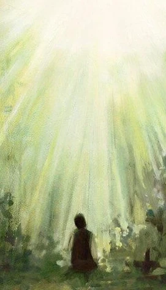

The Restoration
The First Vision
In the spring of 1820, a young man named Joseph Smith prayed in the woods near his home in the state of New York, USA. In response to his prayer, God the Father and Jesus Christ appeared to him. Following this revelation, Joseph Smith was called to be a prophet of the Lord, and the Restoration of the gospel of Jesus Christ began.
What Is the Restoration?
The "Restoration of the gospel" refers to Jesus Christ restoring the fulness of His gospel, priesthood authority, and the organization of His Church to the earth through the Prophet Joseph Smith and later prophets. The Restoration is characterized by a series of divine revelations, beginning with Joseph Smith's First Vision and continuing through modern prophets to this day.